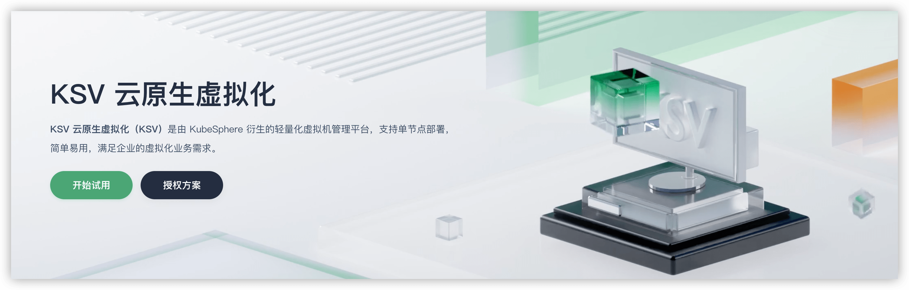
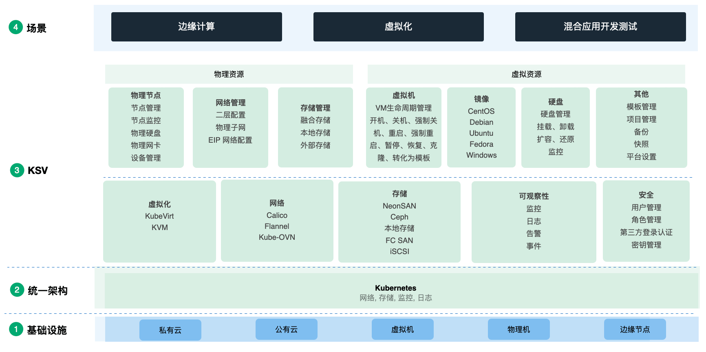
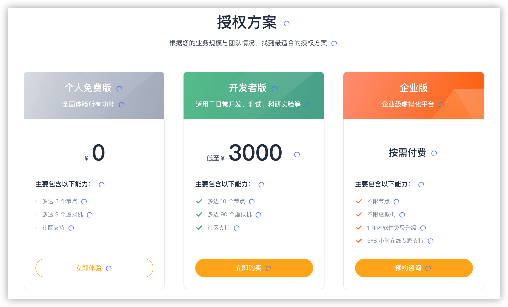
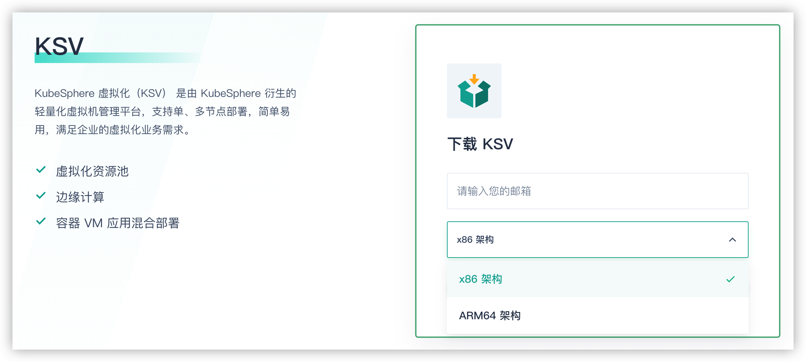

基于 Kubernetes 云原⽣架构的虚拟机平台
KSV 云原生虚拟化是由 KubeSphere 衍生的轻量化虚拟机管理平台，支持单节点部署和多节点部署，便捷易用，满足企业级虚拟化业务需求。KSV 可帮助您减少前期的硬件投入，您可以使用 KSV 创建所需数量的虚拟机，快速开发和部署应用。

1. 工具介绍
功能优点 - KSV 基于 Kubernetes 云原⽣架构，相较于传统虚拟化服务更加轻量、灵活、开放，并且能够实现服务自愈、快速弹性伸缩、灵活调度等能力。具有以下优势的计算存储资源：
- 超低门槛
- 单节点
4C/8G内存即可部署，同时⽀持多节点集群部署
- 单节点
- 极简操作
- 提供便捷易⽤的可视化
Web控制台，并提供自修复能力
- 提供便捷易⽤的可视化
- 快速安装
- 二十分钟之内完成平台部署和更新
- ⾼速运⾏
- 秒级创建虚拟机和调整虚拟机配置
- 卓越兼容
- ⽆底层基础设施依赖，可部署在任何⽀持虚拟化的主机之上
- 对接容器
- 与
KubeSphere容器平台⽆缝衔接，虚拟化和容器化完美融合
- 与
功能架构 - 可以将 KSV 运行在私有云、公有云、虚拟机、物理机、边缘节点等各类开发或生产环境。在功能层面，KSV 主要包含物理节点、网络、存储、虚拟机、镜像、硬盘、安全组等组件。

底层原理 - KSV 各模块的底层原理描述如下表所示。
| 名称 | 描述 |
|---|---|
| 虚拟机 | 底层使用 KubeVirt 插件；支持对虚拟机多种管理 |
| 网络 | KSV 运行在容器环境之上支持多种网络类型 |
| 镜像 | 底层使用 CDI 插件将镜像导入到持久卷中；持久卷的克隆实现系统盘创建 |
| 存储 | 基于 Kubernetes 的 CSI 插件实现存储相关资源的管理 |
| 安全组 | 由 Kube-OVN 创建的网卡提供了对安全组的支持 |
| 带宽限制 | 由 Kube-OVN 创建的网卡提供了对带宽限制的支持 |
| 指标监控 | 基于 Prometheus 实现集群监控指标的配置、收集、存储和查询 |
| 告警监控 | 基于 Prometheus Alertmanager 实现集群告警的配置/收集/存储和查询 |
| 日志查询 | 基于 Fluent Bit 与 Elasticsearch 实现日志的收集、存储和查询 |
产品计费 - KSV 目前提供个人免费版、开发者版和企业版三种模式的虚拟化服务。个人免费版用于助力个人用户和微型团队，提供 3 个节点内的免费虚拟化服务。开发者版和企业版为中小型团队和大型企业用户提供更多节点数、更全面的虚拟化服务体验。


2. 安装使用
- 单节点模式安装 - 建议最低机器为
4C8G配置
服务器节点必须至少具有 1 个未格式化且未分区的磁盘，或 1 个未格式化的分区。该磁盘或分区的最低配置为 100 GB，推荐配置为 200 GB。
# 检查CPU核心数
$ cat /proc/cpuinfo | grep "processor" | sort | uniq | wc -l
# 检查内存大小
$ cat /proc/meminfo | grep MemTotal
# 检查可用磁盘大小
$ df -hl
# 节点需支持虚拟化(x86/arm64)
$ grep -E '(svm|vmx)' /proc/cpuinfo
$ ls /dev/kvm
超卖比，即每个物理 CPU 可以虚拟化多少个虚拟 CPU。只有安装 KSV 时可以设置超卖比，升级时不支持修改超卖比。超卖比还将决定 KSV 可创建虚拟机的总数。可创建虚拟机的总数 = 集群 CPU 核心总数 x 超卖比。
# 下载工具并解压
$ curl -OL https://virtualization.kubesphere.cloud/xx.tar.gz
$ tar -zxvf kubesphere-virtualization-<package name>.tar.gz
$ cd kubesphere-virtualization-<file path>
# 开始安装
# --ratio: 指定KSV集群的超卖比; 默认值为2个
$ ./install.sh -h
$ ./install.sh -a --ratio <overcommit ratio>
# 安装结束后执行以下命令查看安装日志
$ ksv logs
# 如果显示如下信息则安装成功
\#####################################################
\### Welcome to KubeSphere Virtualization! ###
\#####################################################
Console: http://172.16.0.59:30880
Username: admin
Password: P@88w0rd
NOTE:
Please change the default password of the admin user
after login.
\#####################################################
https://kubesphere.cloud/ksv/ 2022-12-01 14:03:45
\#####################################################
3. 使用方式
可以使用 KSV 云原生虚拟化 Web 控制台创建、查看、使用或释放不同类型的虚拟机资源。资源类型主要分为物理资源和虚拟资源。在使用某个资源时，KSV 提供运维工具，帮助实时监控各类资源的使用情况。
- 平台概述
- 仅用户 admin 有权限激活
KSV - 平台概览中的物理资源统计信息仅 admin 用户可见
- 支持自定义
QoS规则，可以帮助区分不同业务的流量
- 仅用户 admin 有权限激活
- 节点管理
- 目前只支持添加节点，可以在 Web 界面和终端添加节点
- 单节点模式下，
KSV个人免费版支持再添加最多2个节点 - 节点添加完成后，执行
ksv set-ceph-ha命令开启高可用 - 终端通过修改配置文件，并通过内置脚本完成添加动作
- 网络管理
- 可以直接给容器分配物理网络中的地址资源
- 项目管理
- 项目用于对资源进行分组管理
- 可以将用户分配到项目中并指定用户的角色以控制项目权限
- 虚拟机管理
- 虚拟机模块对所有用户可见
- 虚拟机模板是虚拟机的一种主副本，包含了虚拟机的具体配置
- 可以使用虚拟机模板创建虚拟机，也可以将现有虚拟机转化为模板
- 虚拟机镜像是虚拟机的一种标准交付物，用于构建环境
- 磁盘管理
- 云原生虚拟化提供数据盘和系统盘两种磁盘类型
- 提供块级别的虚拟存储资源，以文件夹的形式存在于宿主机上
- SSH 秘钥
- 可以使用
SSH密钥安全便捷地登录Linux虚拟机 SSH密钥是通过加密算法生成的一对密钥，由公钥和私钥组成
- 可以使用
- 安全组
- 安全组是一种虚拟防火墙，用于控制入流量和出流量
- 每台虚拟机至少需要属于一个安全组，可为每个安全组添加流量规则
- 定时器
- 定时器对所有用户可见
- admin 用户可以查看系统中的所有定时任务和定时策略
- 监控告警
- 默认免费开启监控告警功能
- 监控告警模块获取节点监控指标，实时分析和处理告警
- 可以创建告警策略，并在告警策略触发后查看告警消息
- 日志
- 系统日志收集系统中的日志数据
- 操作日志可以用于查看用户的操作记录
- 用户
- 用户可以被分配到项目中并根据用户的项目角色获得不同的权限
4. 参考链接
送人玫瑰，手有余香！